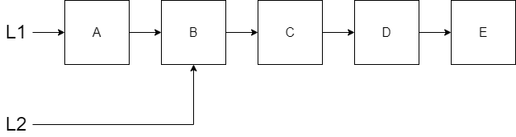

Chapter 2 - Persistence
When we think about data structures, we expect that the data structure will change when things are added, modified, or deleted. However, in our functional world, we are dealing with immutability. This conflict causes us to learn about persistence. This week we will explore persistence with the common list.
2.1 Persistence in Lists
The lists that we are going to look at early in this course are actually linked lists. We will explore an indexed version when we look at Random Access Lists later on. Lets consider the list below that already has five elements within it.

Note that we have a variable L1 that contains a reference to the first node in the list and each node in the list contains a reference to the next node. If we want to add a new node to the front of this list, we have to do it without violating the immutability rule. When we add the new node, we are creating a new list. Notice that L2 points to the new node we have created. However, since the remaining list doesn’t need to change, we just connect the new node to the original L1. Since we get to reuse the entire list, the performance for prepending to the front is only O(1).

Notice we have persisted the original list and created the new list by reusing what we originally had. This is what we mean be persistent data structures.
The code for this prepend operation does not require any recursion.
prepend(List, Value) -> [Value|List].Let’s consider the situation where we want to append a new node to the end of the list ‘L2’. We will need to create a new list L3 and try to reuse as much as possible. However, since we are adding the new node to the end, this will actually result in no reuse.

Notice in the picture above, the last node in both L1 and L2 has to change because it needs to reference the new node instead of referencing nothing. This is a change which conflicts with immutability rules. We can’t change node E to point from nothing to the new node G. Therefore, we need to create a new ‘E’ node that connects to ‘G’. The new E node will require us to create a new D node, and so forth. In the end, we have to make a copy of all nodes to append G to produce L3.
The code for this append function requires the use of recursion. When we arrive at the end of the list by calling append recursively, then we will create our new node as a 1 item list. Once we get the new node created, we return from our recursive calls and begin adding new nodes for each of the values that were in our previous list.
append([], Value) -> [Value];
append([First|Rest], Value) -> [First | append(Rest, Value)].When we look at the append function it may be concerning that there is no reuse. If all we did was call the append function, there would be multiple duplicates of our data all over our memory. In our programming languages, garbage collection will remove any memory that is no longer referenced by another variable. However, there is a cost for not having reuse. We have to recreate the entire list again which is O(n) performance.
In the next topic below, we will consider inserting something in the middle of our list which will cause us to reuse some of the nodes in our list.
Problem Set 1
You can find the template for the problem sets in this lesson here: prove02.erl
- Implement the
prependfunction as shown above. - Implement the
appendfunction as shown above. - To do some additional practice with lists, write a
headfunction that will return the first item in the list. If the list is empty, then return the atomnil. - Implement a
tailfunction that will return the last item in the list. Thetailfunction will need to use recursion just like theappendfunction. If the list is empty, then returnnil.
2.2 More List Persistence
Lets consider two more scenarios with the list and observe how persistence is maintained. First, how do we remove the first value in our list? The only thing that will be affected is our variable referencing the front of the list. In the diagram below, L1 is the original list and L2 is the new list with the first item removed.

Notice that L2 is referencing the second item in the list which means all but the first original node is being reused. Both the original list and the new list persist.
Here is the code for our remove_first function.
remove_first([]) -> [];
remove_first([_First|Rest]) -> Rest.Suppose we start with our original five item list L1 again and consider inserting a node F in the middle after node C. This will be a combination of the ideas that we have seen prepending and appending to our list with respect to reuse. If we insert after index 2 (where the first element is index 0), then we will need new nodes up to index 2 and we can reuse everything after index 2.

Here is the code for our insert_at function. In this code, we will decrement our Index as we recursively search through the list. Once our Index reaches 0 then we know we have reached the desired location. We will then create our new node and connect it (reuse) to the remaining nodes in our original list. If our Index is 0 in the second clause, then we know we have found the place to insert. Notice that if our Index was negative then the original list is returned. For an Index too big, we could use the length function in the first clause. However, to avoid checking the length in every recursive insert_at function call, we have introduced the third clause. However, if the Index is not 0 but the List is empty (the third clause), then we know that our index was too big.
insert_at(List, _Value, Index) when Index < 0 -> List;
insert_at(List, Value, 0) -> [Value | List];
insert_at([], _Value, _Index) -> [];
insert_at([First|Rest], Value, Index) -> [First | insert_at(Rest, Value, Index-1)].Problem Set 2
- Implement the
remove_firstas shown above. - Implement
insert_atfunction as shown above. - Implement a function called
remove_lastthat removes the last item in the list. If the list is empty, then return an empty list. - Implement a function called
remove_atlike theinsert_atfunction which removes an item at a specific index. Notice that this function does not have aValueparameter since we are removing. Additionally, unlikeinsert_at, specifying an index equal to the length of the list is considered an invalid index. If the index is invalid (too small or too big), then return the original list.
2.3 Specifications and Definitions
Throughout the course when we talk about a behavior, instead of immediately writing it using Erlang, we will first describe it with a specification and a definition. You may find that the our definitions and our Erlang code are similar due to the relative simplicity of the Erlang syntax. Using our definitions, you should be able to write code in any functional language.
A specification describes the interface of a function in terms of data types. Here are a list of the data types we will use in the course:
- \(integer\)
- \(real\)
- \(boolean\)
- \(string\).
- \(atom(name)\) - An atom is a label with a specified name but no value.
- \(a\) - Represents any type
- \([a]\) - List of values of any type
- \(\lbrace a_1,a_2 \rbrace\) - 2 element Tuple of values of different types
- \(a_1 \looparrowleft a_2\) - Dictionary (or map) defined by keys \(a_1\) and values \(a_2\).
- \(\lambda\) - Function (frequently called lambda) that is passed to another function
\(\nonumber\)
We write a specification using the \(spec\), \(::\), and \(\rightarrow\) notations. The input types are separated by spaces. An example with 3 inputs is given below. Notice that subscripts will be frequently used.
\(spec ~ ~ name :: input_1\_type ~ ~ input_2\_type ~ ~ input_3\_type \rightarrow output\_type.\)
\(\nonumber\)
We can define custom types for use in our specifications by defining tuples (or records). To define a custom type, we will use the \(struct\) keyword as follows: (this example is for a tuple of size 3):
\(struct ~ ~ name ~ ~ \lbrace type_1:name_1, type_2:name_2, type_3:name_3 \rbrace\).
\(\nonumber\)
In this example, there are three fields each with a type and an optional name. The keyword \(or\) will be used if there are different tuple sizes (arity) permitted in our custom type.
A definition is how the function will use the inputs to produce the output. Names will be used to give meaning to the inputs. You should refer back to the specification to understand the types. When we write definitions, we will use the following notations:
- \(=\) : Save an intermediate result into an immutable variable
- \(+\), \(-\), \(*\), \(/\), \(and\), \(or\), \(>\), \(<\), \(\geq\), \(\leq\), \(==\), \(\not=\) : Commonly used operators.
- \((\lambda ~ ~ input_1 ~ ~ input_2 ~ ~ input_3)\) : Call a function (in this case called \(\lambda\) with the supplied parameters. Notice that this does feel like a function call in Clojure with the parentheses).
- \([]\) : Empty List
- \(\lbrace \looparrowleft \rbrace\) : Empty Dictionary
- \([First|Rest]\) : This splits the list where First is the first element in the list and Rest is the rest of the list.
- \(List1 ++ List2\) : Combines (or concatenates) two lists together.
- \(struct\_name.field\_name\) : Access a field from a custom tuple
- \(nil\) - An atom that represents nothing (used sometimes for error conditions). This atom is special in that it is compatible with any type in the specification. For example, if a function was supposed to return a \([a]\), for certain conditions (like error conditions), you could return a \(nil\) in the definition.
- \(\text{when} ~ ~ condition\) : Provide a guard condition on the function clause.
- We will introduce many different parameter and variable names in our function definitions. Here are common ones that we will use in the examples:
- \(List\) - A list of something
- \(Value\) - A single thing used in a computation or to be added to a data structure like a list
- \(Index\) - The index (sometimes starting at 0 or 1 depending on the problem) in a linear data structure like a list
- \(Result\) - A final answer or the current answer working towards the final answer in cases of recursion
- \(Text\) - A string that is being processed or produced
- \(Count\) - How many of something
- \(Acc\) - Represent an accumulator (something being aggregated together like adding)
- \(Curr\) - Representing the current value of something especially with counters
- \(Item\) - A single item in a collection like a list
- \(Init\) - The first or initial value of something (e.g. an accumulator)
\(\nonumber\)
We write a definition using the same format as the specification but with the \(\mathit{def}\) notation in the front. Instead of data types, inputs are given names and outputs are represented as expressions that use the inputs.
\(de\mathit{f} ~ ~ name :: input_1 ~ ~ input_2 ~ ~ input_3 \rightarrow output\_expressions.\)
\(\nonumber\)
If a function name exists with different number of inputs (different arity) then we will write a specification for each one. The definition for each specification may take multiple clauses. Each clause will handle a different scenario and will be separated by a semicolon. Clauses are evaluated in order.
Let’s do some examples with our list functions. Here is the specification and definition for the prepend function. The prepend function took a list and a value. Therefore the specification will use inputs of \([a]\) and \(a\). The output is just a longer list so it will be \([a]\).
\(spec ~ ~ prepend :: [a] ~ ~ a \rightarrow [a].\)
\(de\mathit{f} ~ ~ prepend :: List ~ ~ Value \rightarrow [Value|List].\)
\(\nonumber\)
The append function will have a similar specification but the definition will be more complicated since we had to use recursion. When you call a function in your definition, you should put the function call in parentheses without commas between parameters. Notice that the definition uses the \([]\) and \([First|Rest]\) notation in the input to help us differentiate the two clauses.
\(spec ~ ~ append :: [a] ~ ~ a \rightarrow [a].\)
\(de\mathit{f} ~ ~ append :: [] ~ ~ Value \rightarrow [Value];\)
\(de\mathit{f} ~ ~ append :: [First|Rest] ~ ~ Value \rightarrow [First | (append ~ ~ Rest ~ ~ Value)].\)
\(\nonumber\)
Let’s look at the specifications and definitions for the remove_first and insert_at functions.
\(spec ~ ~ remove\_first :: [a] \rightarrow [a].\)
\(de\mathit{f} ~ ~ remove\_first :: [] \rightarrow [];\)
\(de\mathit{f} ~ ~ remove\_first::[First|Rest] \rightarrow Rest.\)
\(\nonumber\)
In the insert_at function, we need to have something called a guard. Guards are like if statements that are applied to either a clause or to part of the code within a clause. We use the phrase \(when\) in our definition to indicate a guard. The 3 clauses are evaluated in order.
\(spec ~ ~ insert\_at :: [a] ~ ~ a ~ ~ integer \rightarrow [a].\)
\(de\mathit{f} ~ ~ insert\_at :: List ~ ~ Value ~ ~ Index \rightarrow List ~ ~ \text{when} ~ ~ Index < 0;\)
\(de\mathit{f} ~ ~ insert\_at :: List ~ ~ Value ~ ~ 0 \rightarrow [Value|List];\)
\(de\mathit{f} ~ ~ insert\_at :: [] ~ ~ Value ~ ~ Index \rightarrow [];\)
\(de\mathit{f} ~ ~ insert\_at :: [First|Rest] ~ ~ Value ~ ~ Index \rightarrow [First|(insert\_at ~ ~ Rest ~ ~ Value ~ ~ Index-1)].\)
\(\nonumber\)
Problem Set 3
- Write the specifications and definitions for the
head,tail,removeLast, andremoveAtfunctions. You will write these in your code template as comments. - Implement a function called
backwards(which does the same thing as thereversefunction found in Erlang for lists). The specification and definition of this functions is shown below. Notice there are two specifications because there is a one arity function (called by the user in the test code) and a two arity function (called recursively with the result list). You will need to implement both specifications.
\(spec ~ ~ backwards :: [a] \rightarrow [a].\)
\(de\mathit{f} ~ ~ backwards :: List \rightarrow (backwards ~ ~ List ~ ~ []).\)
\(spec ~ ~ backwards :: [a] ~ ~ [a] \rightarrow [a].\)
\(de\mathit{f} ~ ~ backwards :: [] ~ ~ Result \rightarrow Result;\)
\(de\mathit{f} ~ ~ backwards :: [First|Rest] ~ ~ Result \rightarrow (backwards ~ ~ Rest ~ ~ [First | Result]).\)
\(\nonumber\)
\(\nonumber\)